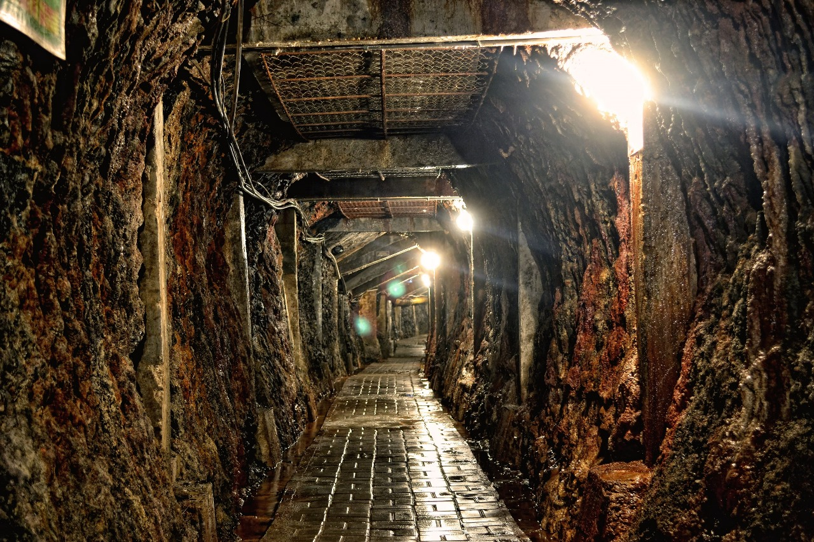

Situs Warisan Nusantara

- Taman Nasional Lorens-

- Tambang Batu Bara Ombilin Sawahlunto-

Menjadi sarana informasi dan edukasi budaya Nusantara, ujung tombak budaya nasional, serta jembatan budaya antara masyarakat dan pemerintah..
Melestarikan kekayaan warisan budaya asli Nusantara, mempublikasikan budaya dan pariwisata ke dunia internasional, dan menjaga kebudayaan Nusantara dari pengaruh globalisasi.
Temukan Keajaiban Budaya Nusantara Menjelajahi Keindahan dan Kekayaan Warisan Nusantara dan Temukan kekayaan budaya Indonesia yang tak terhitung jumlahnya di Warisan Nusantara.